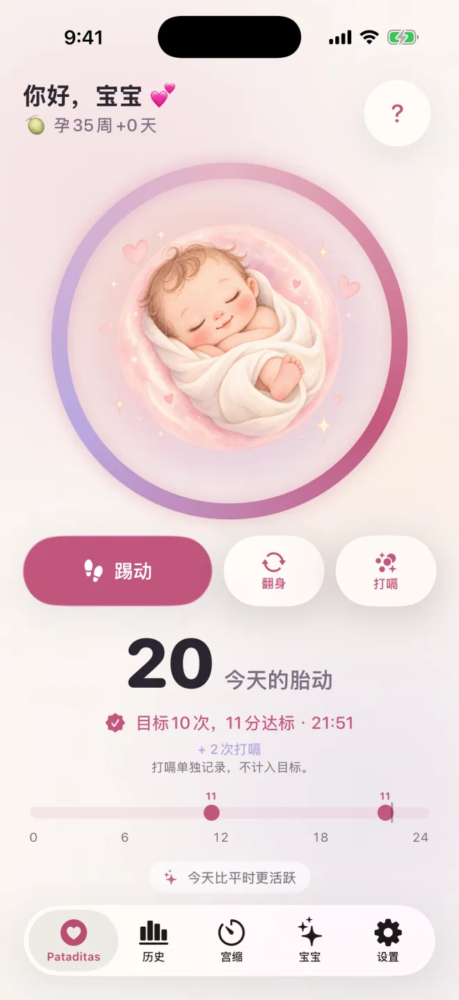

Pataditas / Pataditas使用指南
如何用iPhone或Apple Watch数胎动
Pataditas是一款适用于iPhone和Apple Watch的私密孕期日记。你记录自己感受到的胎动；App会保存时间和胎动类型。本指南介绍的是App的实际使用流程，并不是医学上的数胎动处方。
四步记录一次胎动
打开记录胎动的界面
完成或跳过可选的个性化设置。如果出现Plus的订阅优惠，可以关闭它，继续免费数胎动。
轻点一下就记录
轻点“踢动”“翻身”或“打嗝”。每个按钮都会立刻保存对应的类型。打嗝会留在日记里，但不计入胎动分组。
用大插画记录踢动
轻点中间的插画，就会记录一次踢动。不用选择模式，也不用启动计时器。
纠正误触
如果记错了，记录后立刻轻点短暂出现的“撤销”选项即可。

在Apple Watch上记录
Pataditas配有配套的Apple Watch App（需要watchOS 26或更高版本）。每当感觉到一次胎动，轻点手表屏幕即可，还可以把Pataditas添加到表盘或智能叠放，方便快速打开。记录会通过你的私人iCloud与iPhone App同步。
历史记录和图表会显示什么
免费版的历史记录会显示最近七天。Plus还提供整个孕期的完整历史记录、规律图表和PDF报告。比较结果只使用你输入的胎动；缺少记录可能会影响比较结果。
10次胎动的庆祝代表什么
Pataditas会把两小时内记录的10次踢动或翻身归为一组。这不是健康评估，也不是通用的每日目标。请遵循你的医护团队的指导。
关于数胎动的建议并不一致
关于数胎动，各方的建议并不相同。Count the Kicks（美国）建议从孕28周起（高风险妊娠或怀有不止一个宝宝，则从孕26周起），计时记录感觉到10次胎动需要多久。NHS（英国）表示并没有规定胎动次数，你也不必数踢动，但应该了解宝宝平时的规律。两者在关键一点上是一致的：如果宝宝比平时动得少、停止活动，或规律发生变化，请立即联系你的助产士、医生或产科。NHS还补充说，即使在半夜也应该打电话，不要等到第二天。Pataditas只记录你感受到的胎动；请询问你的医护团队，他们推荐哪种方式。
你的记录保持私密
记录胎动无需联网。启用iCloud后，记录会通过你自己的私人iCloud账户同步。无需注册Pataditas账号，开发者也无法查看你的孕期日记。
作者、来源与适用范围
作者为Luis Angel Lucatero Villanueva，Kaelux创始人，Pataditas的开发者。本指南是产品和一般信息，不是医疗建议。它未经临床医生审阅；其中的医学说法来自下列来源，并于2026年10月21日最后核对。发现错误？请写信至hola@rutmia.com。